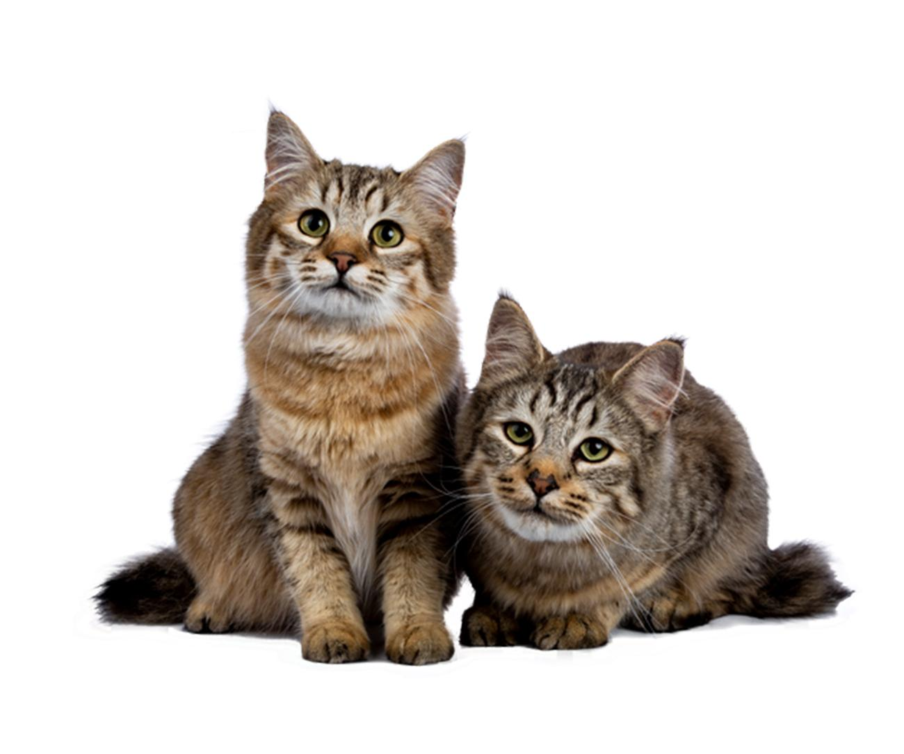

Es una de las razas felinas provenientes del continente americano. En concreto, su origen se encuentra en una zona montañosa de Washington conocida como Cascade Mountains y se sitúa su aparición a finales de la década de los sesenta. Estos gatitos surgieron de forma natural, sin intervención humana, por lo que no se sabe a ciencia cierta qué cruce en concreto permitió que naciera el primer ejemplar de la raza. Tras mucho examinarla, los expertos han sugerido que se trata del fruto de cruces entre linces salvajes americanos, los bobcat, y gatos domésticos.
Son de tamaño mediano a grande, con un peso promedio de 5 kilogramos, aunque la mayoría de los ejemplares tiene un peso más cercano a los 4 kilos, siendo los machos algo más grandes. Estos felinos son de maduración muy lenta, pues el completo desarrollo no se da hasta que no cumplen 4 años de edad, cuando lo normal en el resto de las razas de gatos es que en 1 año hayan completado su crecimiento. Continuando con las características del gato pixie bob, el cuerpo es de fuerte osamenta y musculatura, alargado y de cola normalmente corta, aunque hay ejemplares que ni siquiera tienen cola o bien la tienen larga, siendo siempre gruesa. La cabeza es larga y presenta una frente prominente y una fuerte mandíbula. Los ojos son medianos y ovalados, con un color a juego con el del pelaje. Las orejas son de base ancha y puntas redondeadas, con pinceles similares al de los linces.

Los colores abarcan diversos tonos marrones y rojizos con motas en concordancia al color principal.

Una de las características de los pixie bob más relevantes es su especial carácter, pues es lo que ha hecho que sean tan apreciados. Estos gatitos son realmente afables y cariñosos, por lo que muchos lo consideran como el gato ideal para familias con niños, pues son sumamente tiernos y pacientes, por lo que no hemos de temer por que puedan darse conflictos entre ellos y los pequeños de la casa. Estos gatos son atentos y muy inteligentes, por lo que aprenden realmente rápido, siendo una de las razas de gatos más fáciles de educar, incluso podremos enseñarles algunos trucos o piruetas si somos constantes en su entrenamiento.

La realización de ejercicio diario. Aunque se trata de gatos que no son nerviosos, sí que son activos, por lo que hemos de asegurarnos de que pueden realizar ejercicio todos los días. Para ello podemos jugar con ellos o prepararles juguetes de diversos tipos para mantenerlos entretenidos, podemos coger ideas para preparar juegos de búsqueda o juegos de inteligencia. En este sentido, preparar un adecuado enriquecimiento ambiental, en el que proporcionemos rascadores con diferentes alturas además de juguetes, está más que recomendado para fomentar esta práctica de ejercicio y estimular su mente al mismo tiempo. Respecto a los cuidados del pelo del pixie bob, será suficiente con cepillarlo una vez a la semana para que este luzca bonito y aseado, evitando la acumulación de pelo que puede ocasionar la formación de bolas de pelo en el aparato digestivo de nuestro felino. De la misma forma, hemos de proporcionarle una dieta sana y equilibrada, así como asegurarnos de que tiene siempre a su disposición agua fresca y limpia. Además, hemos de mantener sus oídos, boca y orejas limpios y estar atentos ante posibles alteraciones en los mismos

No se han detectado enfermedades que sean alarmantemente típicas de la raza, sin embargo, se destacan una serie de anomalías genéticas que podrían afectarle, aunque debido a su reciente aparición y consolidación como raza habrá que esperar un tiempo para poder afirmar que tengan tendencia a padecerlas. Algunas de ellas son la distocia o la hiperplasia endometrial quística, que afectarían al aparato reproductivo de las hembras, dificultando el parto y la reproducción. Otra afección que parece común en los gatos pixie bob es la criptorquidia, que consiste en que uno de los testículos no llega a desarrollarse o lo hace de forma inguinal. Por último, parece que los pixie pueden estar más expuestos a patologías cardíacas como la miocardiopatía hipertrófica, que consiste en el engrosamiento del miocardio sin causa aparente